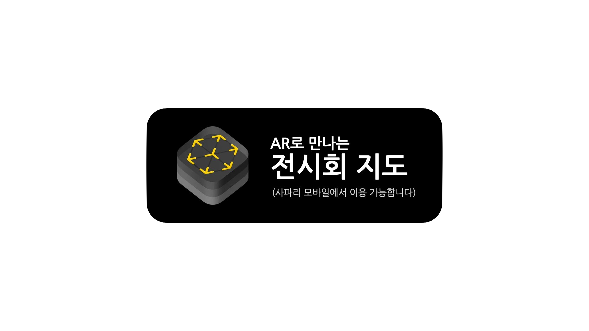

AR Exhibition 2023
6층 메인랩
11/9 목 - 11/10 금 13:00 - 13:50


증강현실은 무엇일까. 고정된 현실 위에 덮여지는 새로운 현실? 그렇다면 덮여지는 것은 무엇일까. 덮여지는 것은 즐거움.
소화기는 건물안에서 고정되어 있지 않은 것중이 가장 고정되어있다. 그런 소화기도 춤추게 만드는 즐거움.
AR 전시회… AR 전시회…
소화기는 얼마나 좋았을까. by Theo, 박상준
작가 및 작품 소개 소개글 by 주디